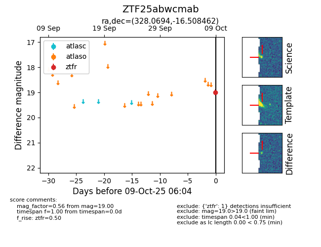

FINK: ZTF25abwcmab
Lasair: ZTF25abwcmab
ALeRCE: ZTF25abwcmab
ZTF25abwcmab (ztf,fink)
equatorial (ra, dec) = (328.0694,-16.50846)
galactic (l, b) = (37.7868,-47.32012)

last ztfr=19.00
1 ztfr detections